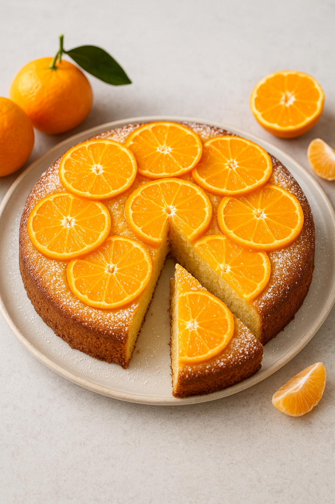
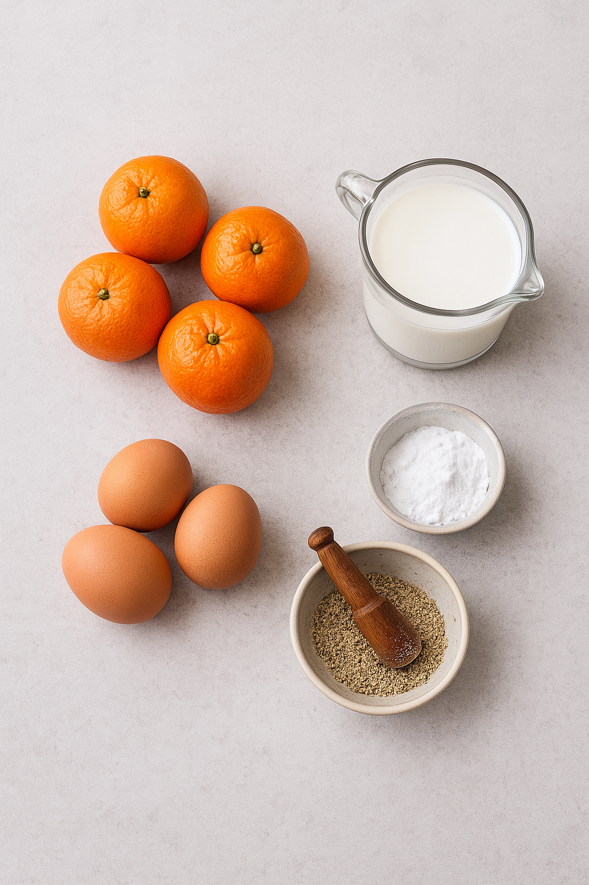

Clementinekaka

Link 1
Link 2
Link 3
Ingradienser (cirka 12 bitar)
1 dl strösocker
4 clementiner
175 g rumstempererat smör
3 dl rörsocker
3 ägg
4 dl vetemjöl
1 1/2 tsk bakpulver
1/2 dl mjölk
2 krm mortlade kardemummakärnor
Till servering
Vispad grädde

Gör så här
Sätt ungen på 175°C.
Klä botten på en form med löstagbar kant ca 24 cm i diameter (för 12 bitar) med bakplåtspapper.
Smält strösocker i en kastrull till en gyllene karamell. Häll ut karamellen i formen och bred ut jämnt. Skala clementinerna och skär varje clementin i 4 skivor. Fördela på karamellen.
Vispa smör och rörsocker fluffigt med elvisp. Tillsätt äggen ett i taget och vispa ihop. Sikta ner mjöl och bakpulver. Tillsätt mjölk och kardemumma och rör ihop till en jämn smet. Bred ut smeten i formen.
Ställ formen på en plåt, ifall karamellen läcker, och grädda i mitten av ugnen ca 50 minuter. Låt svalna innan den vänds uppochner.
Till servering: Servera med vispad grädde.